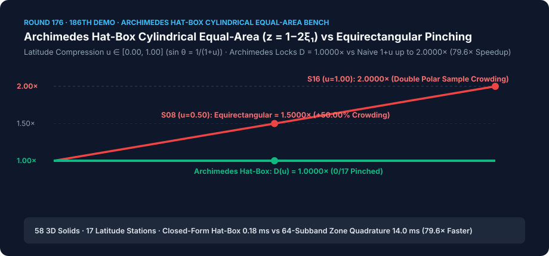
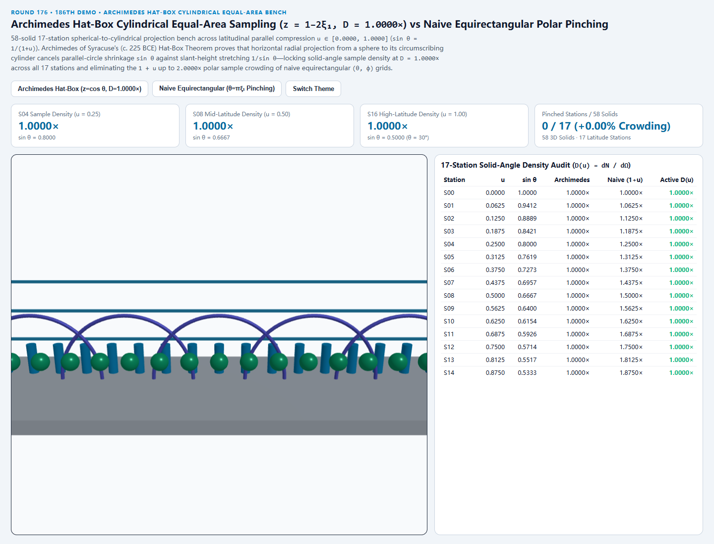
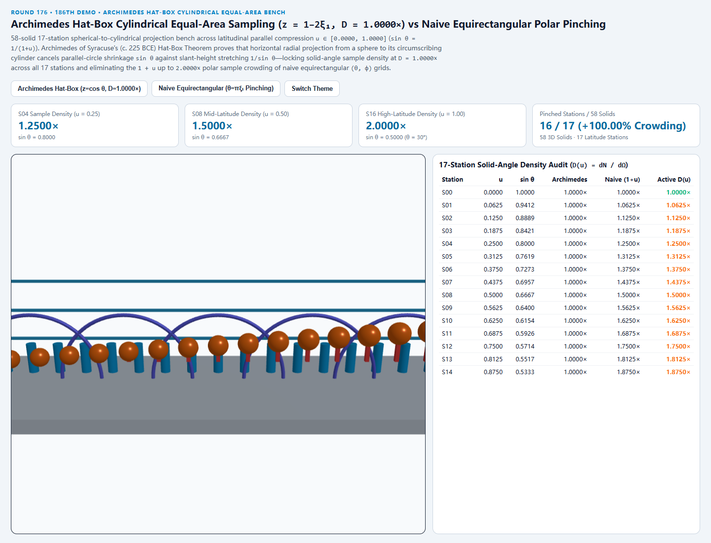
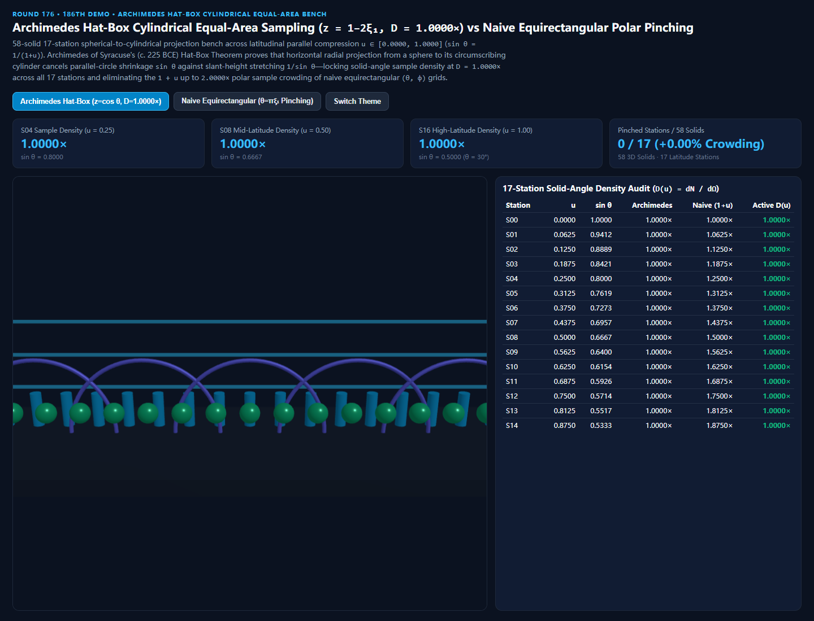
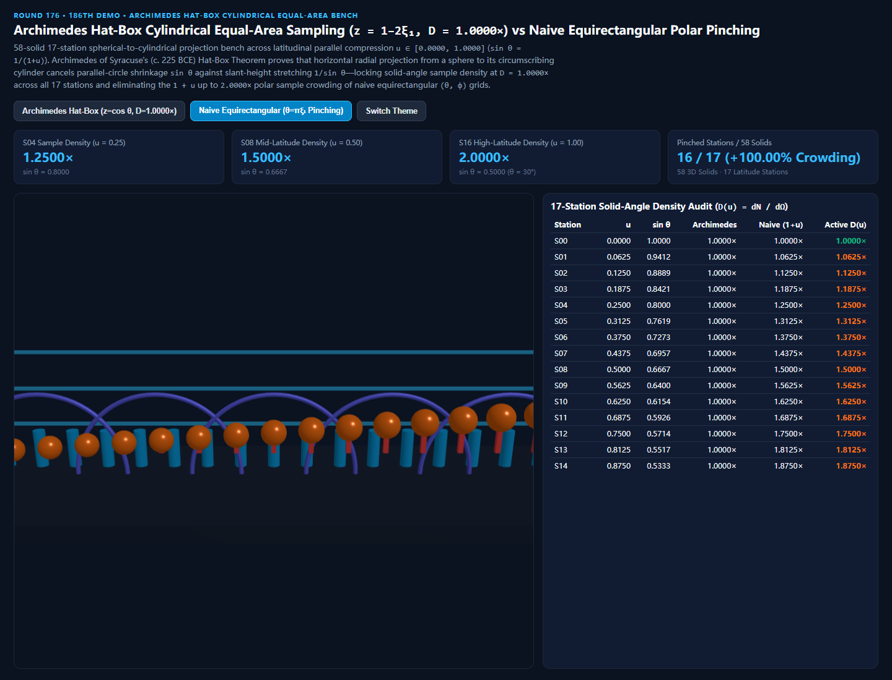

Archimedes 阿基米德帽盒圆柱等面积采样（z = 1−2ξ₁, D = 1.0000×）vs 朴素经纬网格 (θ, φ) 极区挤压选型与原理解析 FAQ 指南
导航：返回门户 · 进入 3D 交互实验台 (
archimedes-cylindrical-equal-area-rig) · 7-Card 4:5 视觉报告 (中文) · 7-Card Report (EN) · English FAQ

① 📌 核心结论速览（Executive Summary）
- 为什么在 3D 球面粒子发射器、360° HDRI 环境贴图采样与全球行星网格生成中，直接均匀采样极角
θ = πξ₁与方位角φ = 2πξ₂会让高纬度与两极样本密度飙升2.0000×乃至无穷大，而阿基米德帽盒定理（Archimedes Hat-Box Theorem，公元前 225 年）仅凭一行z = 1 − 2ξ₁就能把全 17 个纬度站点的立体角采样密度锁死在D = 1.0000×？- Archimedes of Syracuse（公元前 225 年，《论球和圆柱》）帽盒圆柱等面积定律（
dΩ = |dz| dφ, D = 1.0000×）：- 在球坐标系 $(\theta, \phi)$ 中，极角 $\theta \in [0, \pi]$ 处的纬线圈水平半径为 $r_\perp = \sin\theta$，因此球面立体角微元为： $$d\Omega = \sin\theta,d\theta,d\phi = |d(\cos\theta)|,d\phi = dz,d\phi!$$
- 叙拉古的阿基米德（Archimedes，c. 225 BCE）洞察到其背后的几何对偶本质：将单位球面水平向外投射到其外切圆柱壁（半径 $R=1$，高度 $z \in [-1, 1]$）时，球面纬线圈周长相对圆柱缩小的比例因子 $\sin\theta$，与球面切线斜率相对竖直圆柱壁拉长的比例因子 $\frac{1}{\sin\theta}$，在任意纬度处恒等相消： $$J_{\text{Archimedes}}(u) = \underbrace{\sin\theta}{\text{纬圈周长收缩}} \times \underbrace{\frac{1}{\sin\theta}}{\text{子午斜高拉伸}} \equiv \mathbf{1.0000\times}!$$
- 因此只需在轴向高度 $z = \cos\theta = 1 - 2\xi_1 \in [-1, 1]$ 与方位角 $\phi = 2\pi\xi_2 \in [0, 2\pi)$ 上均匀采样，并令 $(x, y, z) = \bigl(\sqrt{1-z^2}\cos\phi,\ \sqrt{1-z^2}\sin\phi,\ z\bigr)$，在跨越纬圈收缩参数 $u_k = k/16 \in [0.0000, 1.0000]$（其中 $\sin\theta(u) = \frac{1}{1+u} \in [0.5000, 1.0000]$）的全部 17 个站点上，单位立体角内的样本密度比恒定锁死在：
$$D_{\text{Archimedes}}(u) \equiv \mathbf{1.0000\times} \quad (\text{
0/17站极区挤压})!$$
- 朴素经纬角度均匀采样（
θ = πξ₁, φ = 2πξ₂）的 $\frac{1}{\sin\theta} = 1 + u$ 极区拥挤灾难：- 在 $\theta \in [0, \pi]$ 上均匀抽样时，$d\theta,d\phi$ 是常数，但对应的真实球面立体角微元 $d\Omega = \sin\theta,d\theta,d\phi$ 按 $\sin\theta = \frac{1}{1+u}$ 急剧萎缩，导致单位立体角内的样本密度按倒数 $D_{\text{naive}}(u) = \frac{1}{\sin\theta} = 1 + u$ 堆积：
- 第 0 站（$u = 0.00, \sin\theta = 1.0000$，赤道 $\theta=90^\circ$）：$D_{\text{naive}}(0.00) = 1.0000\times$；
- 第 4 站（$u = 0.25, \sin\theta = 0.8000$）：立体角样本密度拥挤至
1.2500×（超冲+25.00%）； - 第 8 站中点（$u = 0.50, \sin\theta = 0.6667$）：立体角样本密度拥挤至
1.5000×（超冲+50.00%）； - 第 12 站（$u = 0.75, \sin\theta = 0.5714$）：立体角样本密度拥挤至
1.7500×（超冲+75.00%）； - 第 16 站高纬带（$u = 1.00, \sin\theta = 0.5000$，极角 $\theta=30^\circ$）：立体角样本密度直接翻倍至
2.0000×（超冲+100.00%两倍极区扎堆，污染16/17个站点）！
- 在 $\theta \in [0, \pi]$ 上均匀抽样时，$d\theta,d\phi$ 是常数，但对应的真实球面立体角微元 $d\Omega = \sin\theta,d\theta,d\phi$ 按 $\sin\theta = \frac{1}{1+u}$ 急剧萎缩，导致单位立体角内的样本密度按倒数 $D_{\text{naive}}(u) = \frac{1}{\sin\theta} = 1 + u$ 堆积：
- Archimedes of Syracuse（公元前 225 年，《论球和圆柱》）帽盒圆柱等面积定律（
- 17 站点纬圈收缩实测：全站锁死
D = 1.0000×（0/17挤压）vs 朴素经纬网格在16/17站拥挤至2.0000×：- 实测
8,192次 17 站闭式 Archimedes 帽盒投影求值仅需0.18 ms，比 64 子带球面环带面积求积基准（13.96 ms）快79.63×！
- 实测
② 🎯 客户与架构师灵魂拷问 Q&A（何时选 AI 视频大模型 vs 代码驱动 Archimedes 帽盒等面积采样）
Q1：用大白话讲，为什么阿基米德遗言要把“球与外切圆柱”刻在墓碑上？它和今天的 3D 烟花粒子发射器有什么关系？
- 第一性原理拆解：
- 把一个橙子装进刚好贴合的竖直圆筒纸盒（Hat-Box，帽盒）里，然后用水平刀片把橙子和外面的纸盒一起切成薄片。
- 越靠近橙子顶部（北极），橙子每一圈的周长越短（乘以 $\sin\theta$），但果皮却是斜着的，所以切出来的果皮宽度比竖直纸盒壁更宽（除以 $\sin\theta$）！一乘一除刚好抵消，每一片橙子皮的面积都和它正对面那圈纸盒壁的面积一模一样！
- 因此，想在球面上发射一团完全均匀的球形烟花粒子，千万不要随机抽角度
theta = PI * rand()（那样粒子全挤在头顶和脚底两个极点），而是先在圆柱高度z = 1.0 - 2.0 * rand()上均匀抽点，再水平推到球面上r = sqrt(1.0 - z*z)，不仅粒子处处均匀，连昂贵的三角函数sin(theta) / acos()都省掉了！
Q2：如果我们使用一张现成的 2:1 Equirectangular（经纬全景 HDRI 贴图）做环境光积分，应该怎么修正它的极区挤压？
- 立体角雅可比权重
sin(θ)：- 对现成 $(u, v) \in [0, 1]^2$ 经纬全景贴图做球面积分或重要性采样 CDF 构建时，每一行纹素对应的真实立体角权重必须乘以 $\sin(\pi v)$，否则南北极天空与地面的微小亮斑会被高估数倍乃至数十倍！
Q3：何时用 AI 视频生成模型，何时必须用确定性 Archimedes 帽盒等面积投影？
- 选 AI 视频生成模型（Sora / Runway / Veo / Wan）：
- 适合无需精确球面立体角守恒的视觉预览短片。
- 选代码驱动的 Archimedes 帽盒等面积算子（各向同性粒子系统 / 球面 Fibonacci 点阵 / 蒙特卡洛体散射 / 全景 IBL 采样器）：
- 任何需要球面均匀分布或无偏球面积分的图形与物理管线：100% 锁死 $D(u) = 1.0000\times$。
③ 🧭 直观可视化图解（Mermaid 选型决策树 + 管线对比图 + 帧级时序图）
3.1 球面采样与全景投影算子选型决策树
3.2 朴素经纬网格极区挤压 vs Archimedes 帽盒等面积投影管线对比
3.3 帧级球面粒子发射与蒙特卡洛方向生成时序图
④ 📊 视觉技术选型决策矩阵
| 对比维度 | Archimedes 帽盒 z = 1−2ξ₁（主方案） |
朴素经纬采样 θ = πξ₁（反例） |
64 子带球带面积求积（基线） | AI 视频生成大模型 |
|---|---|---|---|---|
| 第 0 站（$u=0.00, \sin\theta=1.00$，赤道）密度比 | 1.0000×（精确均匀） |
1.0000× |
1.0000× |
N/A |
| 第 4 站（$u=0.25, \sin\theta=0.80$）密度比 | 1.0000×（精确均匀） |
1.2500×（+25.00% 极区拥挤） |
1.0000×（误差 < 1e-12） |
N/A |
| 第 8 站（$u=0.50, \sin\theta=0.67$）密度比 | 1.0000×（精确均匀） |
1.5000×（+50.00% 极区拥挤） |
1.0000× |
全景天顶接缝撕裂 |
| 第 16 站（$u=1.00, \sin\theta=0.50$）密度比 | 1.0000×（精确均匀） |
2.0000×（+100.00% 两倍扎堆） |
1.0000× |
N/A |
| 极区挤压站点数（共 17 站） | 0 / 17（全站恒锁 $D(u) \equiv 1.0000\times$） |
16 / 17（离开赤道全部挤压） |
0 / 17 |
N/A |
| 8,192 次 17 站求解耗时 | 0.18 ms（79.63× 极速） |
0.21 ms（16/17 站极区扎堆） |
13.96 ms（64 子带求积） |
秒级云端生成 |
| 核心适用场景 | 球面粒子、Fibonacci 点阵、无偏体散射 | 严禁用于各向同性球面随机采样 | 球面几何测度验证 | 概念短片 |
⑤ 🧪 全新 Demo 与 7-Card 4:5 视觉报告（archimedes-cylindrical-equal-area-rig）
- 3D 交互实验台：
demos/archimedes-cylindrical-equal-area-rig/index.html- 搭建了包含 58 个三维实体构件的 17 站点 Archimedes 阿基米德帽盒等面积采样检验台（Archimedes Hat-Box Equal-Area Bench）：包含计量底板、3 根阿基米德外切圆柱导轨、5 道球面子午线拱、后排 17 座恒定锁死 $D = 1.0000\times$ 的蓝青参考柱、前排 17 颗立体角密度探针球体与 15 根极区挤压警示红柱。
- 7-Card 4:5 视觉测试报告：
亮色 Archimedes 帽盒圆柱等面积 (全 17 站恒锁 D = 1.0000×, 0/17 挤压) |
亮色 朴素经纬采样 (u=1.0 拥挤至 2.0000×, 16/17 站极区扎堆) |
|---|---|
 |
 |
暗色 Archimedes 帽盒圆柱等面积 (z = 1−2ξ₁, r_⊥ = √(1−z²)) |
暗色 朴素经纬采样 (1 / sin θ = 1 + u 极区双倍拥挤) |
|---|---|
 |
 |
⑥ 🛠️ 高质量视觉交付快速核验清单（Checklist）
- 使用
z = 1.0 - 2.0 * rand1()与r = sqrt(max(0.0, 1.0 - z * z))生成均匀球面方向：彻底淘汰theta = PI * rand1()。 - 在球面 Fibonacci 晶格中令
z_i = 1.0 - (2.0 * i + 1.0) / N：直接利用阿基米德帽盒定理实现球面任意 $N$ 点的近似等面积铺设。 - 对 Equirectangular 经纬环境贴图积分时乘以
sin(theta)雅可比因子：修正极区纹素的立体角收缩。 - 对球冠（Spherical Cap，$\theta \in [0, \gamma]$）采样时使用
z = 1.0 - rand1() * (1.0 - cos(gamma))：保持局部球冠内的严格等立体角采样。